Die letzte Baustelle
Bernd Hesse
Die letzte Baustelle – Wahre Kriminalfälle
Verlag Das Neue Berlin, Berlin 2023

Der dritte Band der Reihe
Mit Die letzte Baustelle setzte Bernd Hesse die Reihe seiner authentischen Kriminalfälle im Verlag Das Neue Berlin fort. Wieder stammen die Geschichten aus der unmittelbaren Erfahrung anwaltlicher Praxis.
Die neun Fälle könnten unterschiedlicher kaum sein. Schwere Gewalt- und Tötungsdelikte stehen neben Drogendelikten, Raub, Betrug und vermeintlich kleineren Straftaten. Im Mittelpunkt stehen dabei nicht allein Tat und Urteil, sondern die Menschen, ihre Lebenswege und die oftmals überraschenden Entwicklungen eines Strafverfahrens.
Gerade diese Spannweite prägt den dritten Band. Tragisches, Abgründiges und bisweilen beinahe Groteskes stehen nebeneinander und zeigen, wie wenig sich das wirkliche Leben an die Dramaturgie eines klassischen Kriminalromans hält.
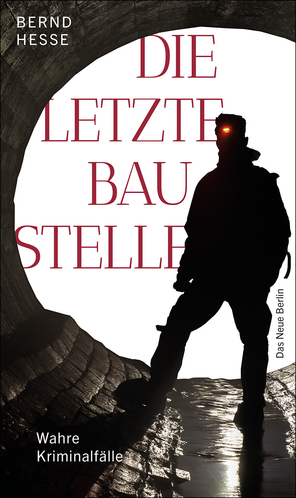
Von der letzten Baustelle bis zum Witwenmord
Die titelgebende Geschichte beginnt mit einem alten Rechtsgrundsatz: pacta sunt servanda – Verträge sind einzuhalten. Aus einem Streit um Bauleistungen und ausstehende Zahlungen in Millionenhöhe entwickelt sich ein Mordfall. Ein Immobilienunternehmer wird in Berlin erschossen; die Ermittlungen führen schließlich in das Baugewerbe und zu einem Auftragsmörder.
Doch der Band bleibt nicht bei spektakulären Kapitalverbrechen. In Nur ein paar Gramm führen Drogenermittlungen, ein Polizeieinsatz und die Auswertung früherer Verfahren zu einer Geschichte, in der sich die Darstellung des Mandanten und das Bild, das sich aus den Akten ergibt, zunehmend voneinander entfernen.
Andere Fälle bewegen sich zwischen Tragik und unfreiwilliger Komik: Ein obdachloser Mann sucht in einer Kindertagesstätte Nahrung und einen warmen Schlafplatz und wird am nächsten Morgen unter einer Kuscheldecke entdeckt. In Neues Spiel, neues Glück! wird ein Täter kurz nach einem Raub mit der Scheinwaffe, dem exakt erbeuteten Geld und ausgerechnet den mitgenommenen Werbekugelschreibern des überfallenen Geschäfts aufgegriffen.
Der Fall Witwenmord führt dagegen wieder zu einem Tötungsdelikt und zu aufwendigen kriminalistischen Ermittlungen mit DNA-Spuren, Sonderkommission und öffentlicher Fahndung.
Rechtsmedizin und Strafverteidigung
In zwei Geschichten des Bandes begegnet der Rechtsmediziner Dr. Bernd Kopetz. In Nur ein paar Gramm findet sich in einer früheren Verfahrensakte eine von ihm untersuchte Blutprobe wieder. Im Fall Klaustrophobie wird er unmittelbar hinzugezogen, um die Haftfähigkeit eines Festgenommenen zu prüfen.
Kopetz gehörte zu den Schülern des legendären Rechtsmediziners Professor Otto Prokop an der Berliner Charité. Bernd Hesse kannte ihn bereits aus zahlreichen Strafverfahren als erfahrenen rechtsmedizinischen Sachverständigen. Die Begegnungen zwischen Strafverteidigung und Rechtsmedizin sollten für die weitere Entwicklung der Buchreihe noch eine besondere Bedeutung gewinnen.
Positive Resonanz
Auch in der Presse und bei Buchrezensenten fand der dritte Band der Reihe positive Resonanz. Zeitungen griffen das Buch auf und empfahlen es ihren Lesern; ebenso beschäftigten sich Buchblogger mit den neuen authentischen Kriminalfällen.
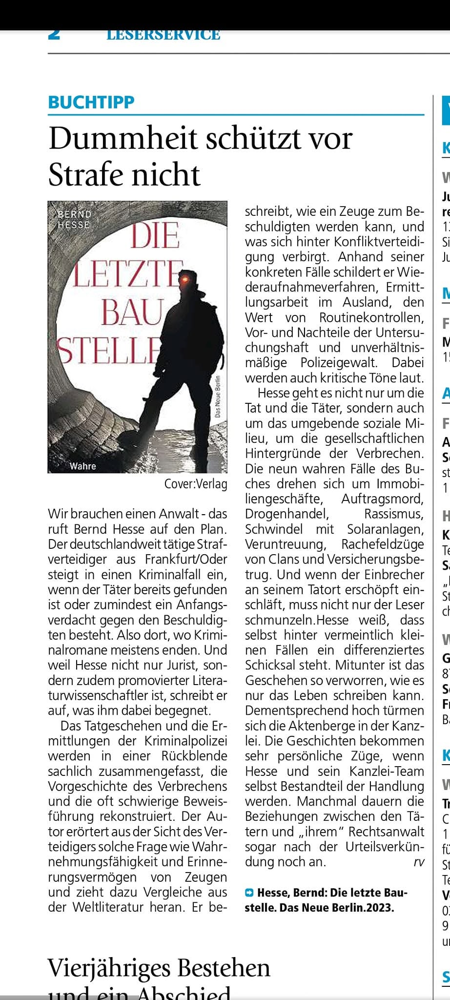
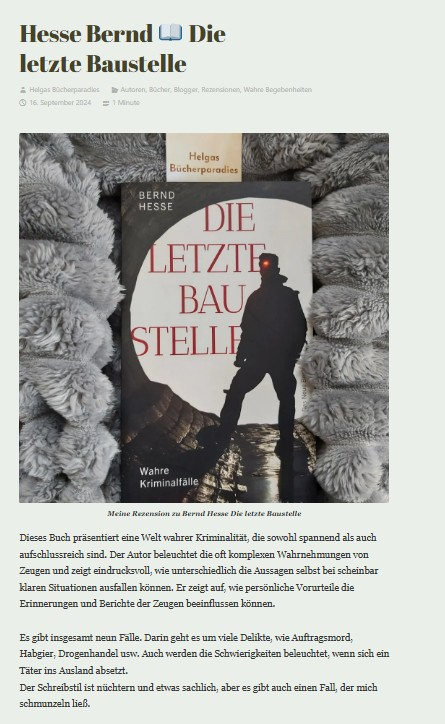
Das Buch geht auf Leserreise
Wie schon die beiden vorausgegangenen Bände führte auch Die letzte Baustelle zu zahlreichen Lesungen und Gesprächen mit dem Publikum. Dabei ging es regelmäßig nicht nur um einzelne Geschichten, sondern auch um die Arbeit des Strafverteidigers, um Ermittlungen, Beweisfragen, Schuld und Strafe.
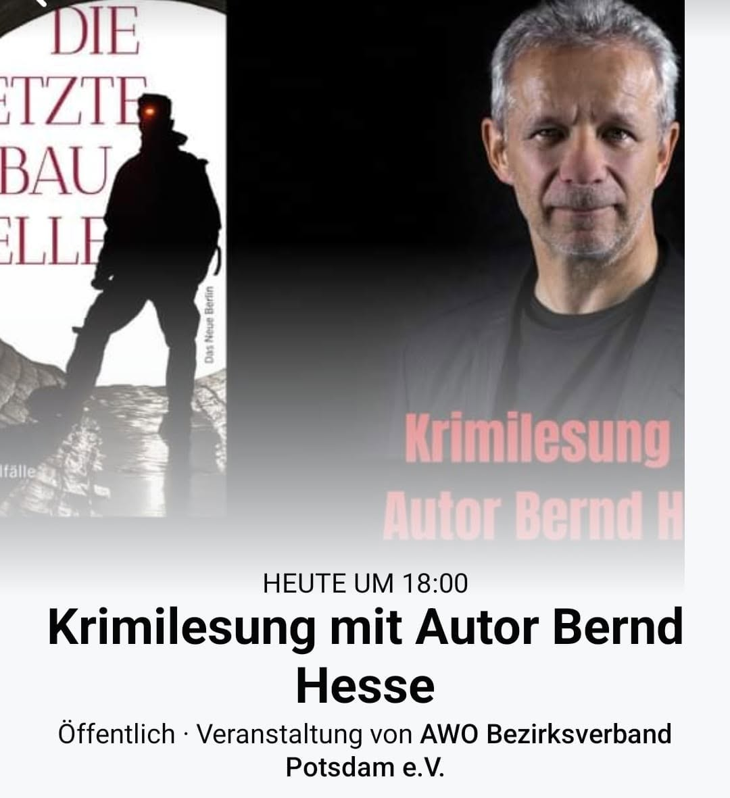
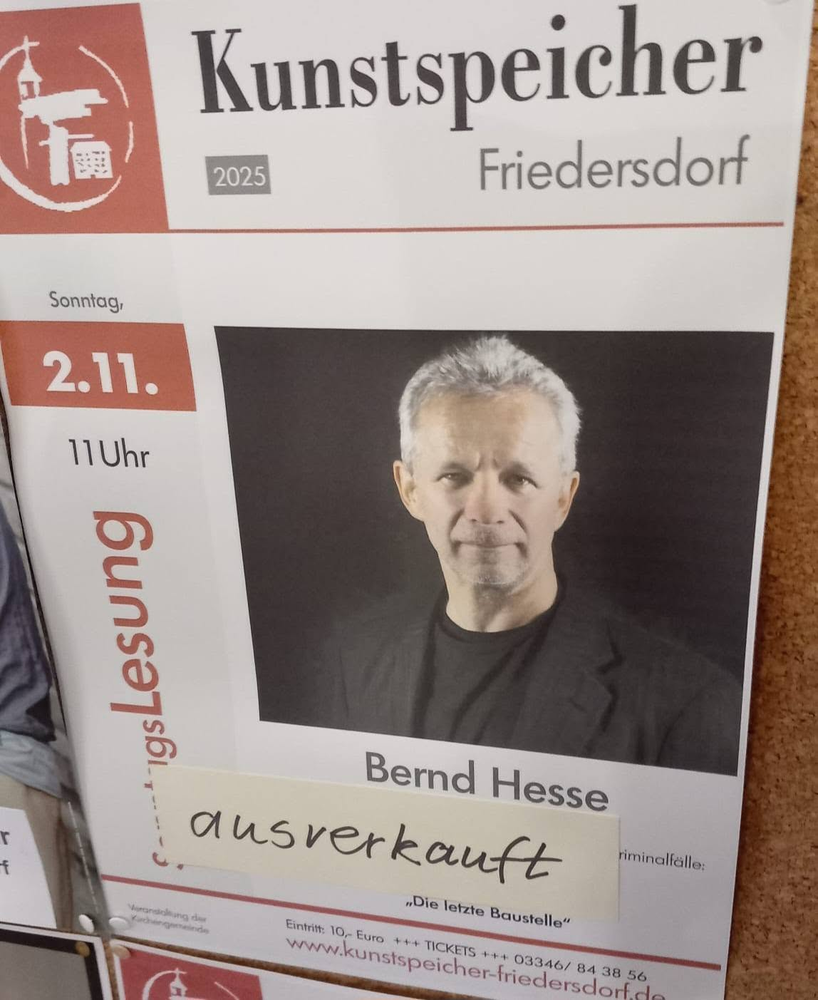
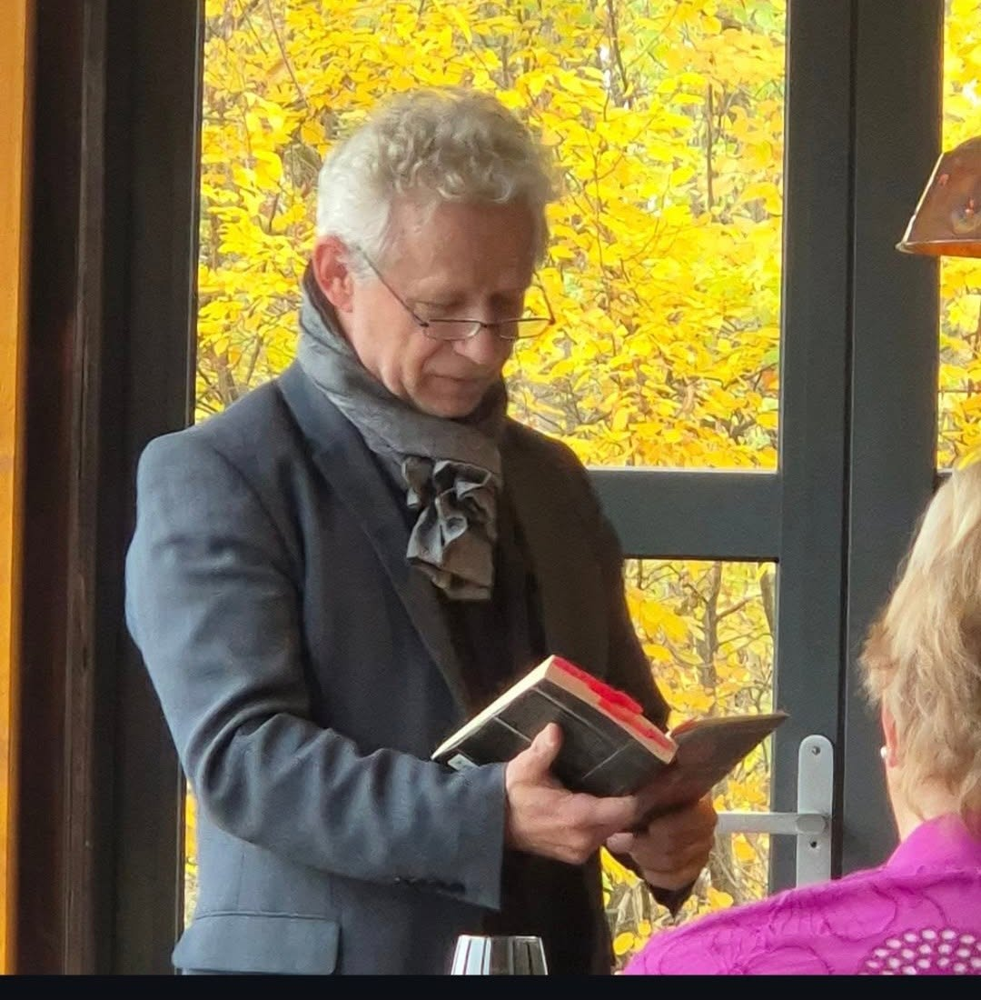
Zu den Stationen gehörte auch der Kunstspeicher Friedersdorf. Ankündigung und Veranstaltung zeigen, wie sehr sich die Lesungen inzwischen zu einem festen Bestandteil der öffentlichen Geschichte der Buchreihe entwickelt hatten.
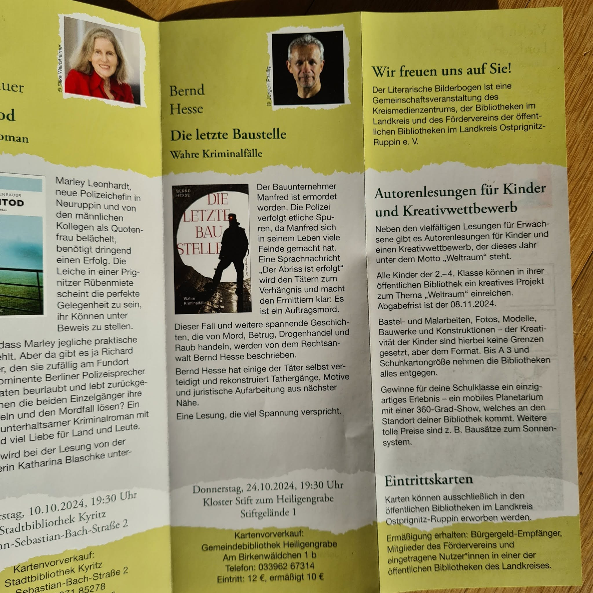
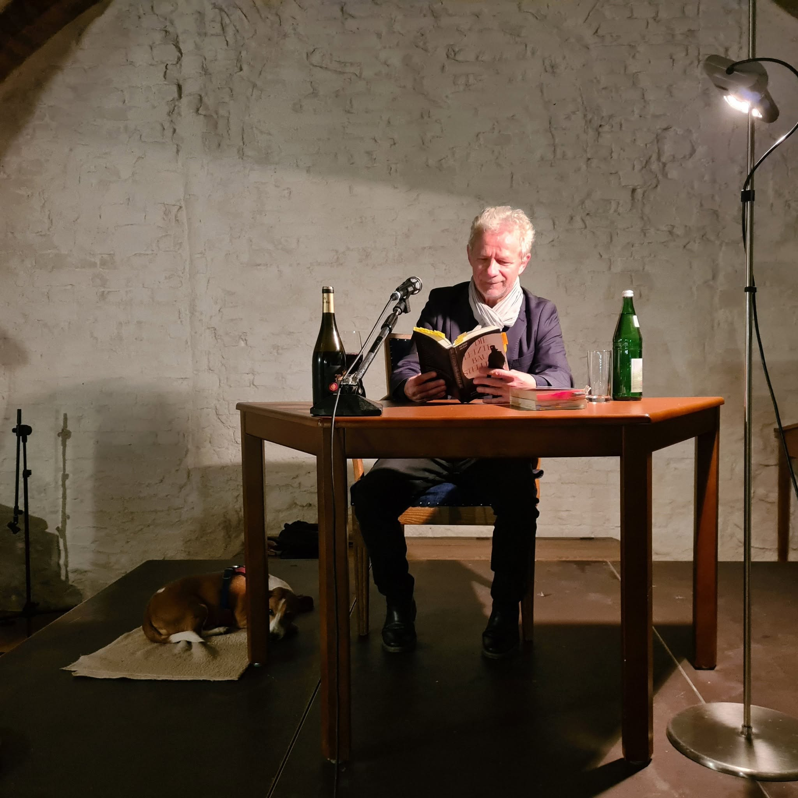
In Heiligengrabe war auch Luise dabei. Die Kanzleihündin ist den Leserinnen und Lesern des Buches bereits vertraut: Auch im Kanzleialltag der Geschichten meldet sie zuverlässig, wenn es an der Tür klingelt. So begegnet bei dieser Lesung ein Stück jener Wirklichkeit wieder, aus der die Bücher entstehen.
Buchpremiere im Kleist Forum
Die Buchpremiere von Die letzte Baustelle fand im Kleist Forum Frankfurt (Oder) statt. Mit auf der Bühne war Dr. Bernd Kopetz – jener Rechtsmediziner, der bereits in zwei Geschichten des Buches eine Rolle spielt.
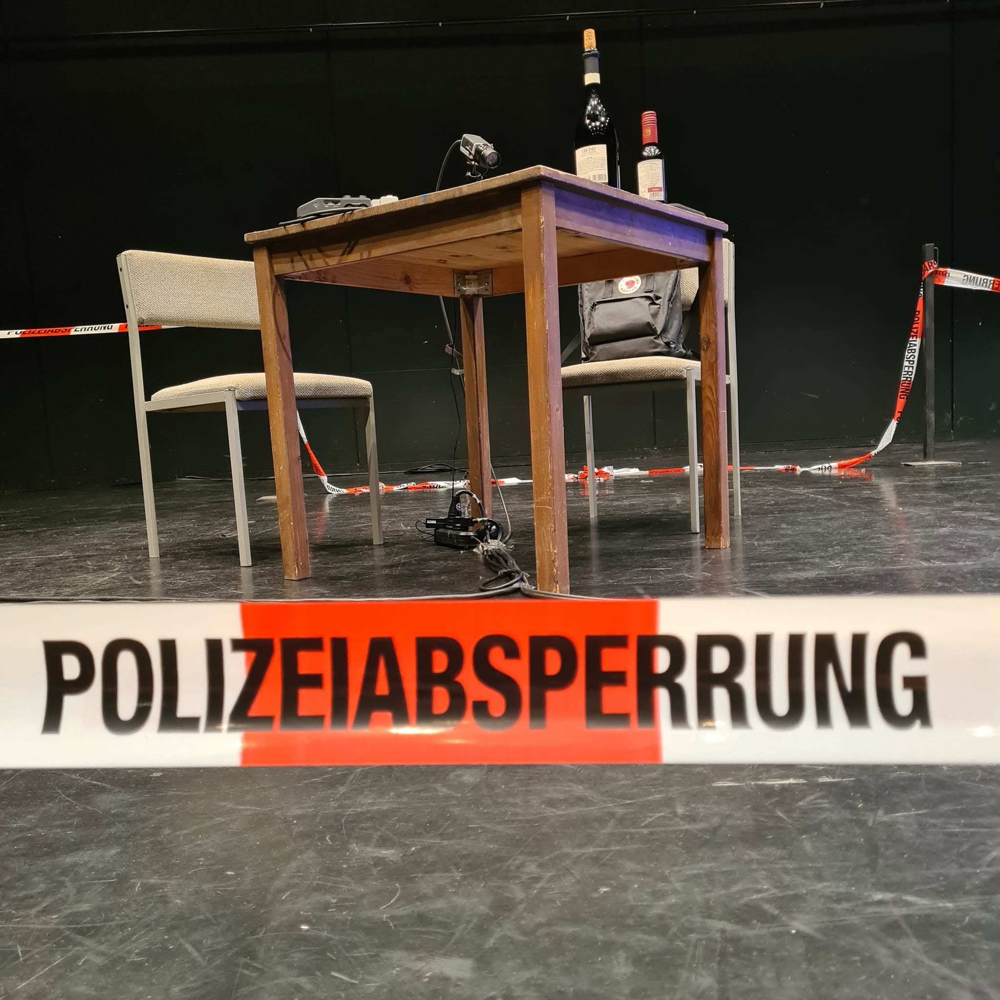
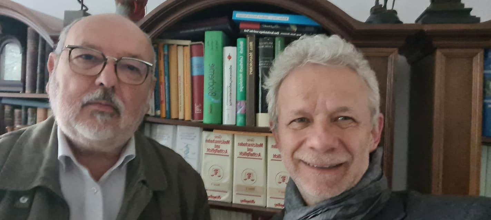
Der gemeinsame Auftritt hatte eine Vorgeschichte. Schon vor der Premiere hatten sich Rechtsmediziner und Strafverteidiger im Zusammenhang mit der rechtsmedizinischen Praxis immer wieder über Fälle und über die unterschiedlichen Perspektiven ihrer Berufe ausgetauscht.
Den Buchverkauf bei der Premiere übernahm – wie schon bei anderen Veranstaltungen – die Buchhandlung Ulrich von Hutten, die sich für den Abend mit einer stattlichen Zahl von Exemplaren eingedeckt hatte.
Von drei Bänden zum gemeinsamen vierten Buch
Was mit Die Hinrichtung begonnen und mit Durch die Hölle fortgesetzt worden war, hatte sich mit Die letzte Baustelle zu einer dreibändigen Reihe entwickelt. Zugleich wurde bei der Buchpremiere bereits der Grundstein für ihre Fortsetzung gelegt.
Aus der damals vereinbarten Zusammenarbeit von Rechtsanwalt und Rechtsmediziner entstand der vierte Band: Tod im Rapsfeld. Damit wurde aus der gelegentlichen Begegnung von Bernd Hesse und Bernd Kopetz in den Fällen von Die letzte Baustelle eine gemeinsame Autorenschaft.
Vom Buch zum Hörbuch
Eine weitere Gestalt erhielt Die letzte Baustelle schließlich als Hörbuch. Bernd Hesse sprach die Geschichten selbst ein und brachte damit jene Fälle, die aus der anwaltlichen Praxis hervorgegangen waren, noch einmal in einer anderen Form zu ihrem Publikum.
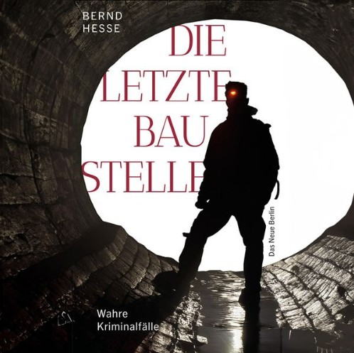
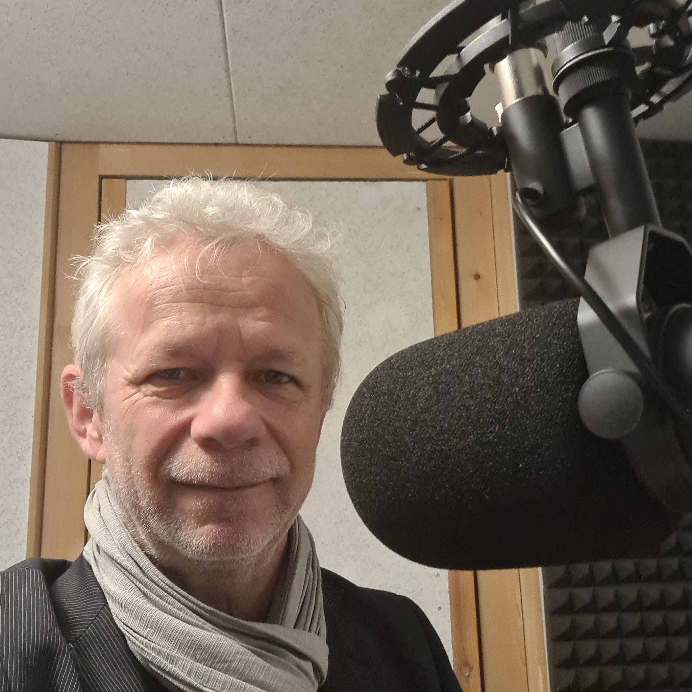